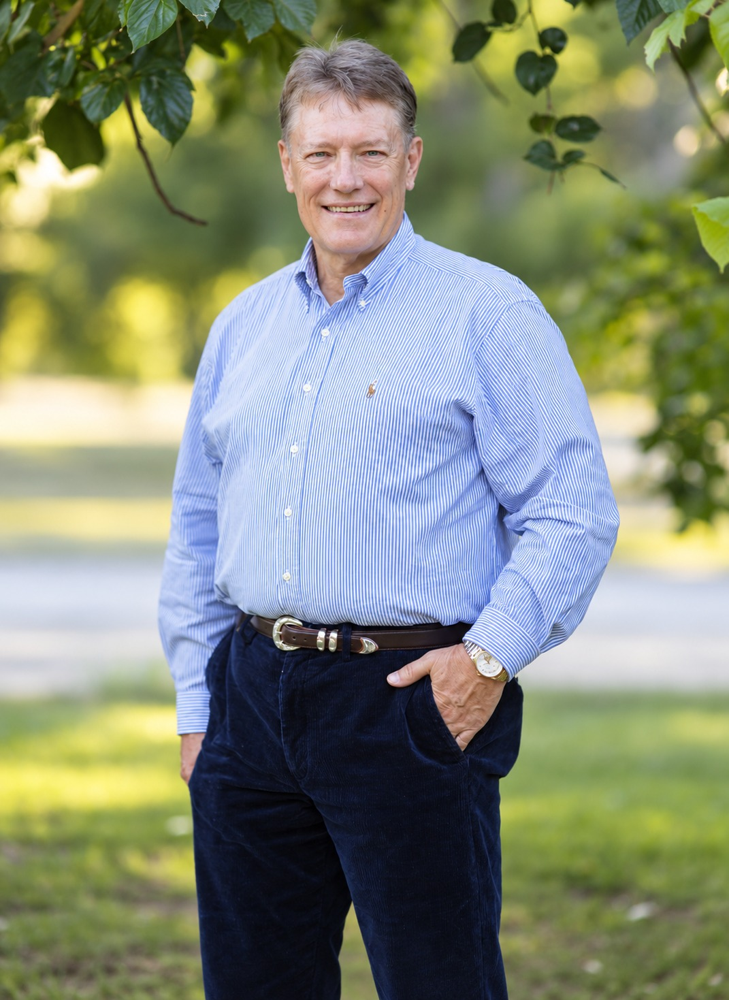
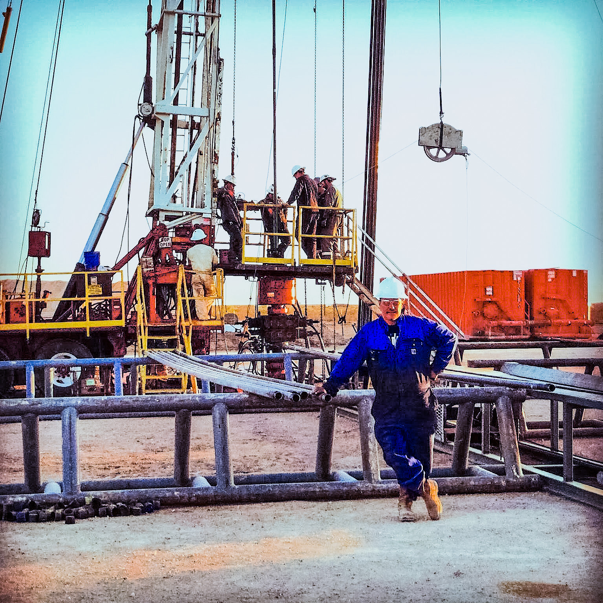

About Todd W. Michael
Engineering discipline. Owner’s perspective.
Todd W. Michael is Managing Director of Denali Equity Investments.
His background spans petroleum engineering, field operations, business leadership, financial evaluation, and direct real-estate ownership. Different settings. The same lesson repeated: assumptions matter, systems fail at their weak points, and capital has to survive contact with reality.
Denali was built around that way of thinking.

Why Denali Exists
The protection starts with the way you think.
Todd grew up the son of a refrigeration mechanic. Long before he learned to read a pro forma, he learned that buildings are systems — roofs, equipment, plumbing, electrical, maintenance, people. Ignore one part long enough and another part eventually sends you the bill.
That perspective followed him into petroleum engineering and field operations, where equipment, capital, geology, safety, execution, and time all interact — often under pressure. Optimistic assumptions do not stay theoretical for very long.
Later, direct real-estate ownership made the lesson personal.
Denali exists because Todd came to believe that durable wealth in real estate begins with disciplined selection and continues through realistic operations. The objective is not to find a story that makes the numbers attractive.
It is to understand what has to go right — and what happens when it does not.
Systems Under Pressure
Analysis matters because reality gets the final vote.
Engineering teaches you to break a problem into parts. Operations teach you that the parts do not stay separate.
Todd’s work has repeatedly put engineering, operations, and capital in the same decision. He has worked in field and offshore operations, evaluated acquisition prospects, supervised the deployment of emerging technology under demanding conditions, and led operating and capital projects where equipment, people, timing, and capital all had to work together.
That experience shapes how Denali approaches real estate.
A model is useful. So is market data. So is experience.
None of them gets to overrule the asset.

Ownership Changes What You Notice
The spreadsheet has a place. Ownership shows what it leaves out.
Todd has personally owned and self-managed rental property since 2018. That means dealing with the part of real estate that rarely looks dramatic in an investment presentation: maintenance, contractors, residents, vacancies, repairs, insurance, taxes, timing, and the small operating leaks that quietly reduce cash flow.
A repair does not care what the annual budget says.
A turnover does not arrive because the calendar says it is convenient.
And a collection of small operating problems can matter as much as one large underwriting mistake.
Direct ownership reinforced something Todd had already learned in engineering: systems rarely fail because one variable announces itself in advance. Problems accumulate. Margins disappear. Conditions change.
That is why Denali treats operating realism as part of underwriting — not something that begins after closing.
Stewardship Is Communication
Investors should understand the decision before they are asked to share the risk.
Denali’s responsibility is to communicate what the investment depends on, which assumptions matter, where the risks are, what ownership can control, and what it cannot.
That standard does not end at acquisition. When conditions change, communication matters more, not less. Good news is easy to report. Stewardship becomes visible when the news is complicated.
The Denali Standard
Judgment before activity. Stewardship after the decision.
Denali Equity Investments was built to own real estate with institutional discipline: select carefully, underwrite what exists, protect capital, operate realistically, and communicate clearly.
If you want to understand how those principles are applied to an investment, start with the process.
The fuller reasoning behind how Denali decides what to walk away from — and how Denali communicates once capital is committed — lives in Resources.
The name Denali comes from the Koyukon Athabascan word Deenaalee — “the high one.” Todd finds meaning in the name not as a claim of greatness, but as a reminder to keep the standard high.